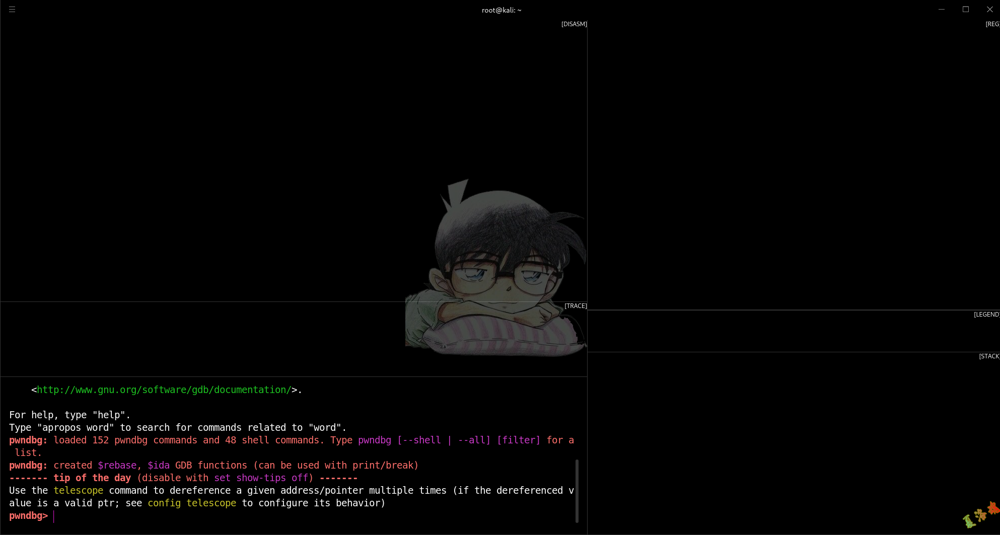

基础环境
下载链接
https://www.kali.org/get-kali/#kali-virtual-machines
以root用户登录
Kali Linux虚拟机官方提供了一个默认账号:kali/kali,但是并没有提供root账号.
- 先用kali/kali进入虚拟机,执行以下命令设置root账号密码.
- 重置完root密码后,切换用户或重启系统,用刚设置的密码登录root账号.
设置时区
1
|
dpkg-reconfigure tzdata
|
在弹出窗口选择 Asia->shanghai
字体安装
- 在/usr/share/fonts目录下,创建一个文件夹my_fonts
- 将ttf格式字体复制到/usr/share/fonts/my_fonts目录下.
Shell查看和切换
1
2
3
4
5
|
//这里我们要切换到bash,目前Kali默认是zsh
//切换bash
chsh -s /bin/bash
//切换zsh
chsh -s /bin/zsh
|
注意:重启后生效.
实用工具
ProxyChains
1
2
3
4
|
apt install proxychains
gedit /etc/proxychains.conf
//找到[ProxyList]删除原来的socks4,然后加上
[socks5 IP 端口]
|
注意:要关闭Windows的防火墙.
pyenv
Python版本管理软件.
安装:
- 配置构建环境.
https://github.com/pyenv/pyenv/wiki#suggested-build-environment
1
2
3
|
sudo apt-get update; sudo apt-get install make build-essential libssl-dev zlib1g-dev \
libbz2-dev libreadline-dev libsqlite3-dev wget curl llvm \
libncursesw5-dev xz-utils tk-dev libxml2-dev libxmlsec1-dev libffi-dev liblzma-dev
|
- 安装pyenv.
https://github.com/pyenv/pyenv#basic-github-checkout
1
2
3
4
5
6
7
8
9
10
11
|
proxychains git clone https://github.com/yyuu/pyenv.git ~/.pyenv
//zsh
echo 'export PYENV_ROOT="$HOME/.pyenv"' >>~/.zshrc
echo 'export PATH="$PYENV_ROOT/bin:$PATH"' >>~/.zshrc
echo -e 'if command -v pyenv 1>/dev/null 2>&1; then\n eval "$(pyenv init --path)"\nfi'>>~/.zshrc
//bash
echo 'export PYENV_ROOT="$HOME/.pyenv"' >>~/.bashrc
echo 'export PATH="$PYENV_ROOT/bin:$PATH"' >>~/.bashrc
echo -e 'if command -v pyenv 1>/dev/null 2>&1; then\n eval "$(pyenv init --path)"\nfi'>>~/.bashrc
|
- 安装python版本.
1
2
3
4
|
//无代理
pyenv install 3.8.0
//有代理
PYTHON_CONFIGURE_OPTS="--disable-ipv6" proxychains pyenv install 3.8.0
|
常用命令:
1
2
3
4
5
6
7
8
9
10
11
12
|
//列出可供安装的python版本
pyenv install --list
//安装指定版本的
pyenv install <version>
//在当前目录下设置python版本
pyenv local <version>
//全局设置python版本
pyenv global <version>
//列出系统中安装的python版本
pyenv versions
//显示当前目录下采用的python
pyenv version
|
参考链接:
https://www.jianshu.com/p/be08b5b1dbf6/
https://www.jianshu.com/p/7656896265ab
htop
加强版的top工具,可以动态查看当前活跃的、系统占用率高的进程.
jnettop
用来实时查看系统网络负载.
tree
文件名搜索工具,在解包apk后,搜索文件的名字非常好用.
编程工具
AndroidStudio
- 下载AndroidStudio
https://developer.android.google.cn/studio
- 解压并运行.
切换到android-studio/bin目录下,运行当前目录的studio.sh即可启动AndroidStudio.
- 创建程序桌面图标.
1
2
3
4
5
6
7
8
9
10
11
12
|
//创建桌面图标
vim /usr/share/applications/android-studio.desktop
//添加以下内容
[Desktop Entry]
Name=AndroidStudio
Encoding=UTF-8
Exec=sh -c "/software/android-studio/bin/studio.sh"
Icon=/software/android-studio/bin/studio.png
StartupNotify=false
Terminal=false
Type=Application
|
执行完上述操作后,即可在菜单中找到AndroidStudio的桌面程序图标,右键可以添加到桌面.其它应用程序雷同.
- 将adb工具添加到环境变量.
默认安装的话,adb所在目录为/root/Android/Sdk/platform-tools
1
2
|
echo "export PATH=$PATH:/root/Android/Sdk/platform-tools" >> ~/.zshrc
source ~/.zshrc
|
VSCode
https://code.visualstudio.com/
以root用户启动VSCode,无法启动问题解决:
1
2
|
//修改Command为
/usr/share/code/code --no-sandbox --unity-launch %F
|
调试工具
GDB
1
|
apt install gdb-multiarch
|
Hyperpwn
- 配置Hyper
1
2
3
4
5
6
|
proxychains wget https://github.com/vercel/Hyper/releases/download/v3.1.0-canary.4/Hyper-3.1.0-canary.4.AppImage
chmod 777 ./Hyper-3.1.0-canary.4.AppImage
gedit ~/.zshrc
alias hyper='/Android/HyperPwn/Hyper-3.1.0-canary.4.AppImage --no-sandbox'
source ~/.zshrc
|
- 退出Hyper,安装插件
1
2
|
npm install hyperinator
npm install hyperpwn
|
- 安装pwndbg
1
2
3
4
|
pip config set global.index-url https://pypi.tuna.tsinghua.edu.cn/simple
proxychains git clone https://github.com/pwndbg/pwndbg
cd pwndbg
./setup.sh
|
- 修改Hyper配置文件(~/.hyper.js)
1
|
plugins: ["hyperinator","hyperpwn"]
|

- 启动Hyper,更新插件
依次点击Plugins->Update,然后再依次点击View->Reload
- 重启Hyper,运行gdb-multiarch,当出现下面的界面表示配置成功
